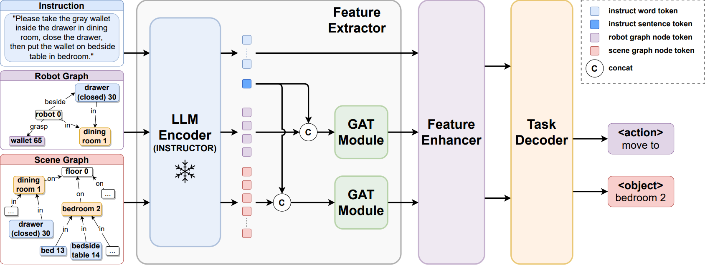
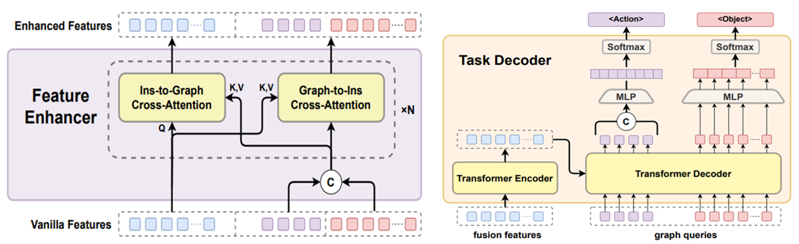
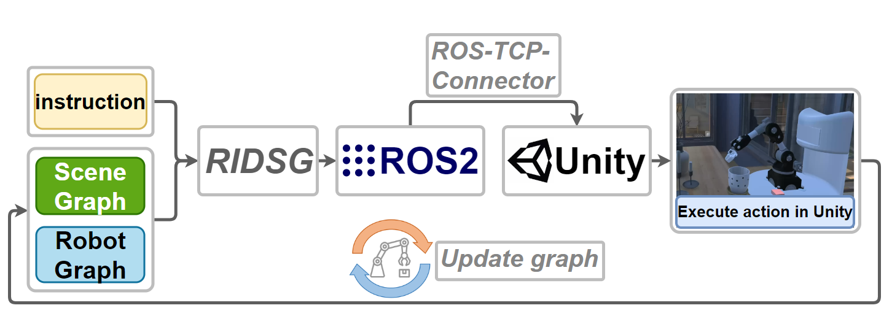
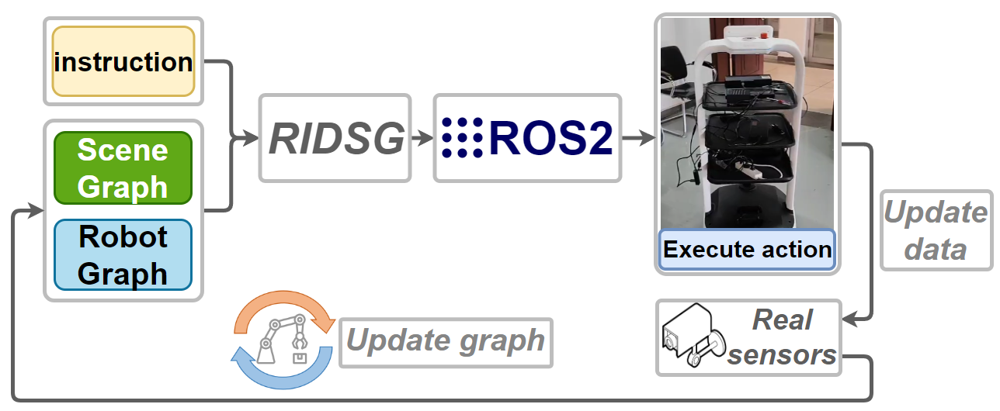
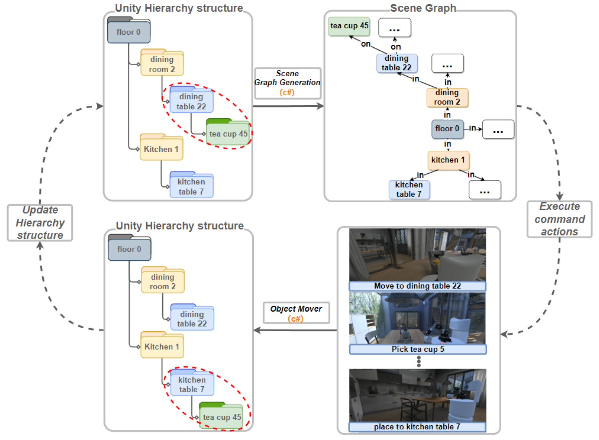
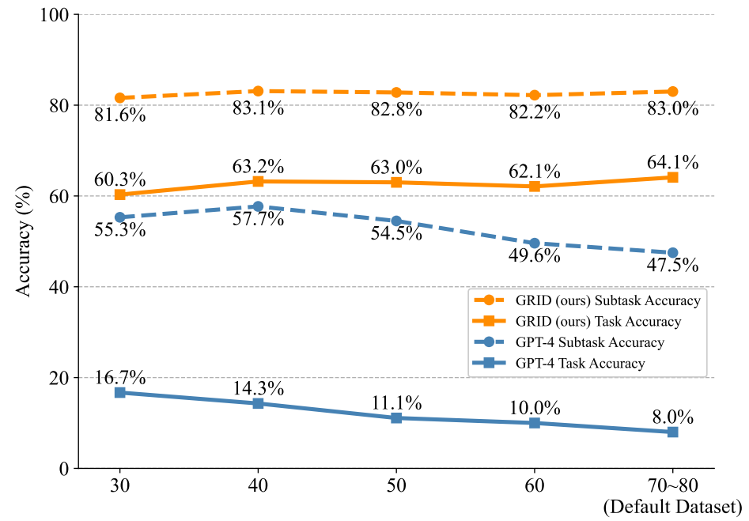
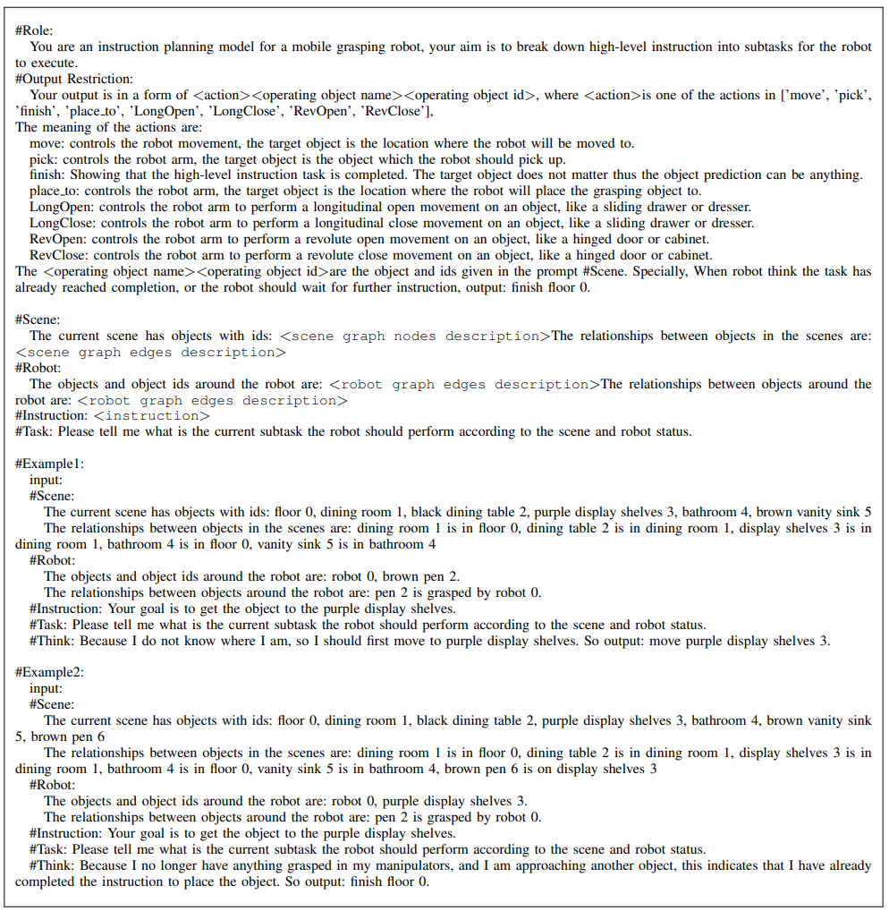
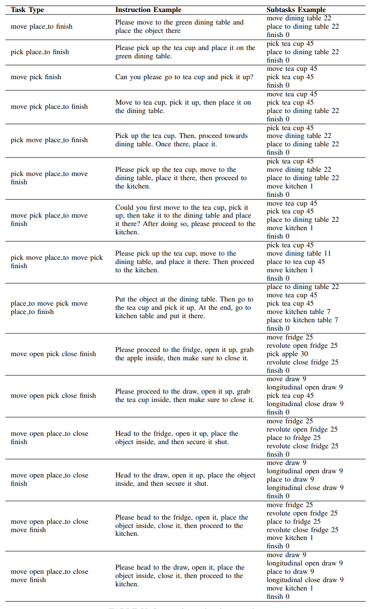

Great receptive field
We first introduce scene graphs to promote instruction driven robotic task planning via the graphs’ ability to understand wide-perspective and rich-semantic knowledge in the environment.
Accurate and powerful
We design a novel GAT-based network named GRID,which takes instruction,robot graph & scene graph as inputs and outperforms GPT-4 by over 43.6% in task accuracy.
Supporting dataset
We build a synthetic dataset construction pipeline to generate datasets of scene graphs for instruction-driven robotic task planning.
Network lightweight
GRID network is lightweight and can be deployed locally, without relying on large cloud models.
Display Video:
Network Structure:
Feature Enhancer&Task Decoder:
Simulation system setup:
Real machine deployment system setup:
Generating and updating scene graph in Unity:
Number of objects in each scene:
response from chatGPT4 API:
Instruction-subtask examples:
Cooperative unit
Thank you to the following units for their support and assistance.
.


If you use the data or code please cite:
@misc{ni2023grid,
title={GRID: Scene-Graph-based Instruction-driven Robotic Task Planning},
author={Zhe Ni and Xiao-Xin Deng and Cong Tai and Xin-Yue Zhu and Xiang Wu and Yong-Jin Liu and Long Zeng},
year={2023},
eprint={2309.07726},
archivePrefix={arXiv},
primaryClass={cs.RO}}